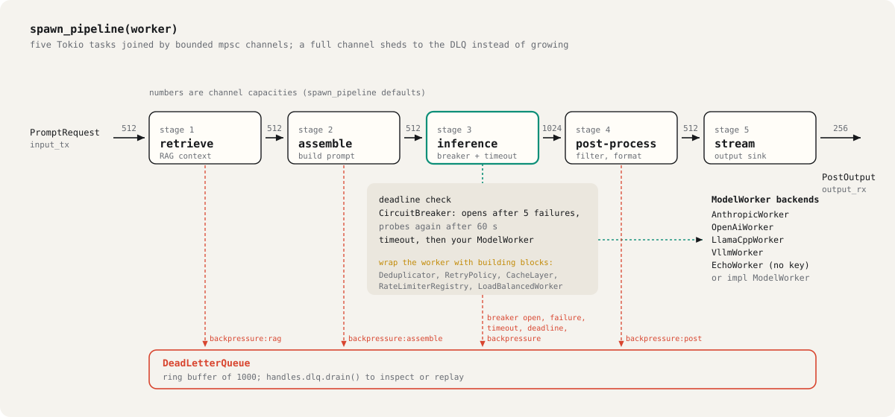
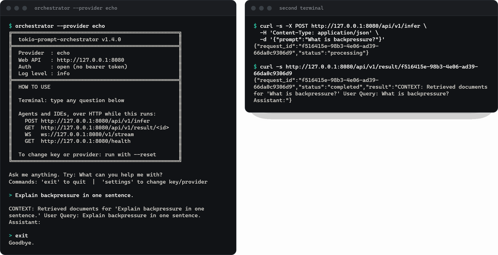

Deduplication
Identical prompts are keyed and coalesced. In the run, 12 requests became 3 model calls; the 9 repeats were answered from the dedup cache in 0.3 ms total.
enhanced::Deduplicator
Rust crate · Tokio · MIT
Duplicate prompts share one model call. A failing provider trips a circuit breaker so requests fail fast instead of piling up. Every request the pipeline drops lands in a dead-letter queue you can inspect and replay. Works with Anthropic, OpenAI, llama.cpp, vLLM or your own backend.
cargo run --example llm_pipeline12 requests from 4 users ask 3 questions, then 8 more arrive during a simulated provider outage. Every dot is a request; every timestamp is from the recorded run, played at one fifth speed.
Source: llm_pipeline_trace.json, from cargo run --example llm_pipeline with the built-in mock model (300 ms per call), debug build, Windows x86_64.
Identical prompts are keyed and coalesced. In the run, 12 requests became 3 model calls; the 9 repeats were answered from the dedup cache in 0.3 ms total.
enhanced::Deduplicator
Wraps every worker call in stage 3. After 5 failures it opens and the next requests are refused without touching the provider. It probes again after 60 s.
enhanced::CircuitBreaker
Nothing is dropped silently. Full channels, timeouts, expired deadlines, failures and breaker refusals all land in a 1000-entry ring buffer with the reason.
handles.dlq.drain()
Five Tokio tasks joined by bounded channels (512, 512, 512, 1024, 512, 256). A slow model makes producers wait or shed, so memory stays flat under load.
spawn_pipeline(worker)
The example is about 200 lines and a good template for wiring your own backend. Set PROVIDER=anthropic or PROVIDER=openai with a key to make the same 3 calls against a real model; the outage is simulated in front of the provider, so it costs nothing.
Stage 3 is where resilience lives: a deadline check, the circuit breaker and a timeout around your ModelWorker. Dedup, retries, caching, rate limits and load balancing are building blocks you wrap around the worker, exactly as the example does with Deduplicator.

Clone and run the example. No key, no network.
git clone https://github.com/Mattbusel/tokio-prompt-orchestrator cd tokio-prompt-orchestrator cargo run --example llm_pipeline
Interactive terminal plus an HTTP API on port 8080. echo needs no key. Windows (one PowerShell line), Homebrew, Scoop and cargo binstall: see Install.
curl -fsSL https://raw.githubusercontent.com/Mattbusel/tokio-prompt-orchestrator/main/install.sh | sh
orchestrator --provider echo
# then, from another terminal
curl -s -X POST http://127.0.0.1:8080/api/v1/infer \
-H 'Content-Type: application/json' \
-d '{"prompt":"What is backpressure?"}'Swap EchoWorker for AnthropicWorker, OpenAiWorker, LlamaCppWorker or VllmWorker.
[dependencies]
tokio-prompt-orchestrator = "1.4"
tokio = { version = "1", features = ["rt-multi-thread", "macros"] }use std::{collections::HashMap, sync::Arc}; use tokio_prompt_orchestrator::{spawn_pipeline, EchoWorker, ModelWorker, PromptRequest, SessionId}; #[tokio::main] async fn main() -> Result<(), Box<dyn std::error::Error>> { let worker: Arc<dyn ModelWorker> = Arc::new(EchoWorker::new()); let handles = spawn_pipeline(worker); let mut output = handles.take_output_rx().await.ok_or("output taken")?; handles.input_tx.send(PromptRequest { session: SessionId::new("demo"), request_id: "req-1".into(), input: "Hello, pipeline!".into(), meta: HashMap::new(), deadline: None, }).await?; if let Some(out) = output.recv().await { println!("{}", out.text); } for dropped in handles.dlq.drain() { println!("dropped {}: {}", dropped.request_id, dropped.reason); } Ok(()) }
The orchestrator binary runs a terminal prompt and a REST, SSE and WebSocket API side by side. Post a prompt, get a request id, then fetch the result; /health reports the breaker state and queue depth.
Claude Desktop and Claude Code connect through the separate mcp binary over stdio: MCP setup
Prebuilt 1.4.0 binaries exit right after printing the banner; the fix is on main and ships in the next release. Build from source until then.

Per-model sliding window plus token bucket. Real output for a 10 requests per minute limit:
req-01 ok ... req-10 ok req-11 throttled: sliding window limit exceeded; window resets in 60001 ms req-12 throttled: sliding window limit exceeded; window resets in 60001 ms
rate_limiter::RateLimiterRegistry
Anthropic, OpenAI, llama.cpp and vLLM workers, an offline EchoWorker, and LoadBalancedWorker for round-robin or least-loaded pools. Implement one async trait for anything else.
trait ModelWorker
Queue depths, breaker states, dedup savings and a log panel in a Ratatui TUI. It ships with a mock-data mode for a look without a running pipeline.
cargo run --bin tui --features tui
Feature flags add Prometheus metrics, OpenTelemetry tracing, Redis-backed distributed dedup, prompt templates, A/B tests and a self-tuning control loop. The default build has no optional dependencies.
--features full
From the last recorded run in BENCHMARKS.md (Windows, x86_64, EchoWorker, so no network or model time). CI tracks the pipeline benchmarks on every push: benchmark history
| Measurement | p50 |
|---|---|
| Rate limiter check | 110 ns |
send_with_shed (non-blocking send with shedding) | 204 ns |
| Circuit breaker check, closed | ~0.4 µs |
| Dedup check, cached | ~1.5 µs |
| 100 identical concurrent prompts with dedup, one inference | 52.6 µs total |
1000 concurrent EchoWorker calls | 7.1 ms total |